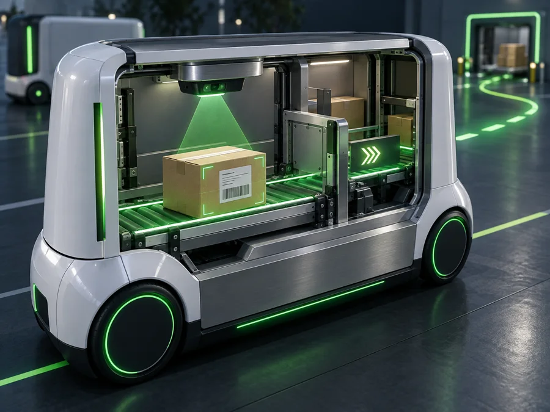
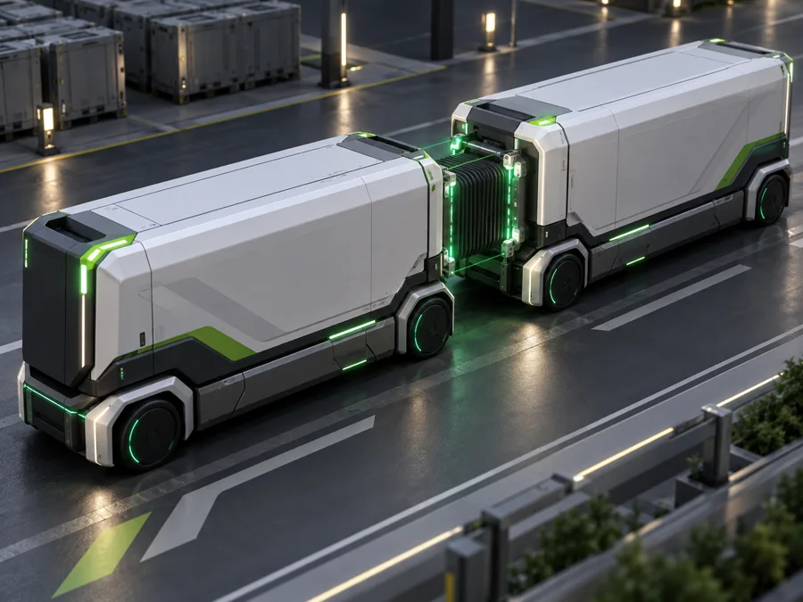
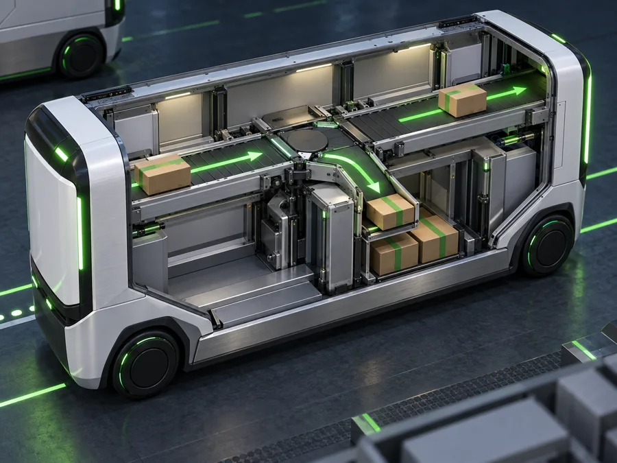
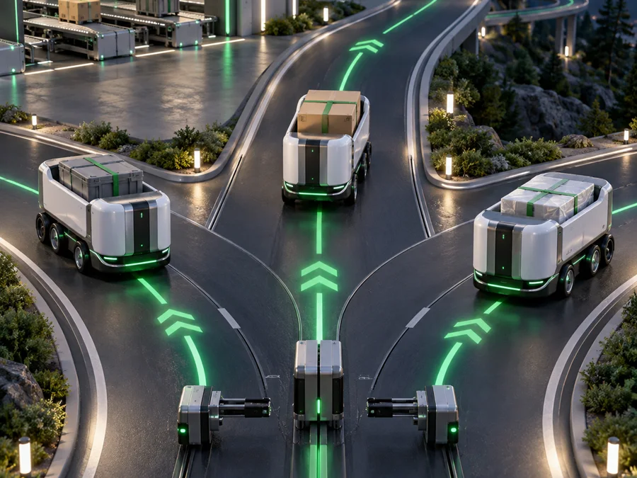
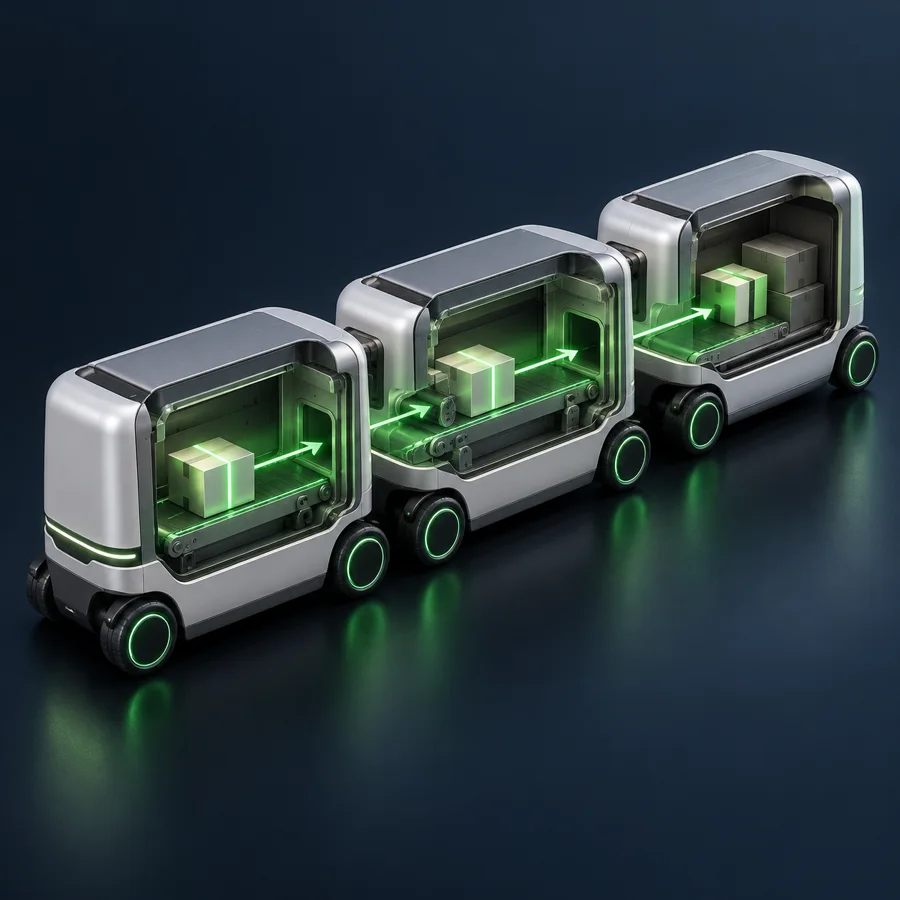
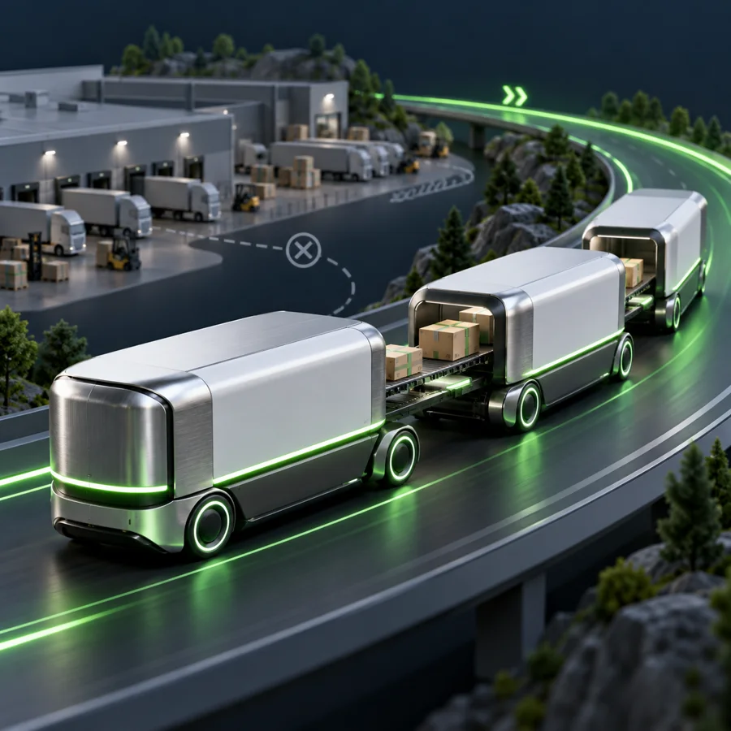
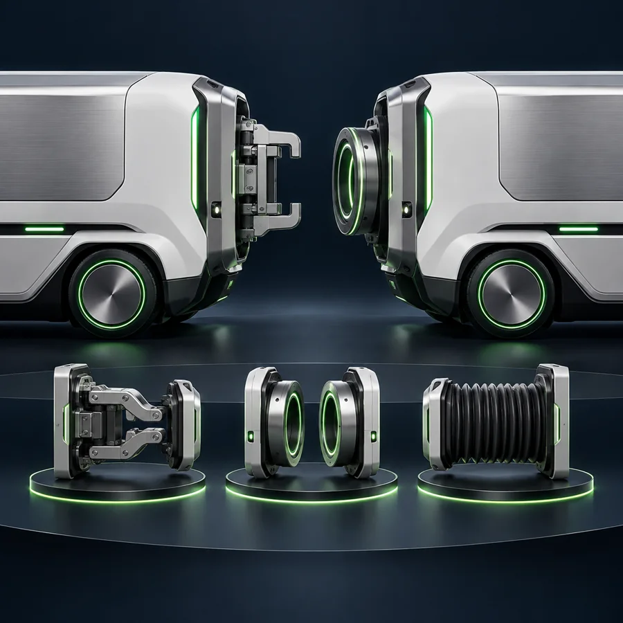
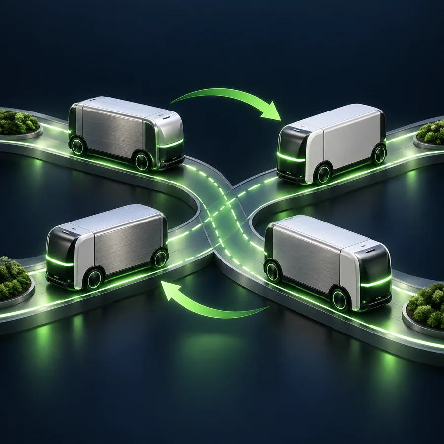
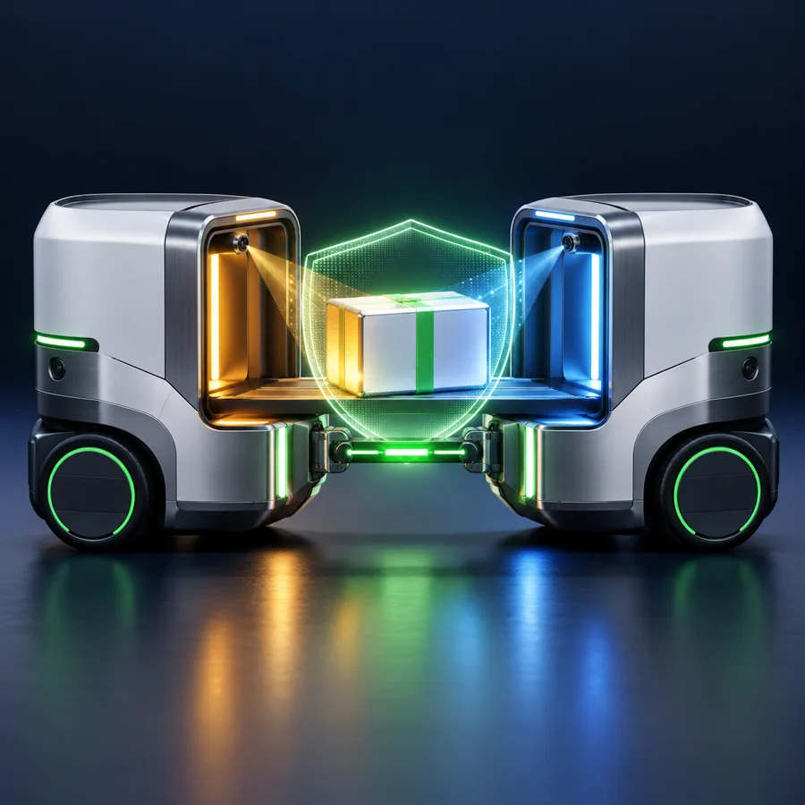

1
Read the destination
A scanner or manifest identifies where each individual package should go and selects a destination vehicle.

Worm Cargo is a patent-pending logistics architecture in which cargo vehicles connect into a live chain and automatically route destination-addressed packages from one vehicle to another—including through an intermediate vehicle—without first unloading at a fixed sorting hub.
Conventional logistics repeatedly sends vehicles to fixed facilities, unloads their cargo, sorts it, and reloads it for the next leg. Every stop adds dwell time, handling, infrastructure, and another opportunity for delay or damage.
Worm Cargo changes the unit of organization. The vehicles temporarily become one connected moving system, with an aligned route inside the chain that can carry each package toward the vehicle serving its destination.
Five stages turn several vehicles into a temporary mobile sorting network, while preserving a package-level destination for every unit.
A scanner or manifest identifies where each individual package should go and selects a destination vehicle.

Compatible vehicles align and releasably couple, creating a protected transfer path between their cargo areas.

Automated conveyors, robots, or other transfer mechanisms move the package through one or more connected vehicles.
A switchable transfer spine can send a unit straight through, divert it into local storage, or merge it back into the flow.

After sorting, vehicles decouple and diverge, each carrying the packages for the route or destination it serves.

The concept centers on physical package routing across a persistent, releasably coupled chain—not merely platooning, pairing, or meeting at a dock.

A package can enter an intermediate vehicle that is neither its origin nor its destination, pass through it, and continue to a non-adjacent vehicle in the same coupled chain.

The chain can route cargo while moving or while parked without unloading that package at a fixed sorting facility between coupling and decoupling.

The transfer path is not tied to one connector. Implementations may use mechanical, magnetic, vacuum, inductive, bridge, or protected gangway arrangements.

Vehicle membership and position can be changed to shorten a package's path, consolidate cargo, or send a vehicle toward a different destination after sorting.

Coupling handshakes, continuity sensing, transfer-complete interlocks, and condition-aware rerouting can help protect both custody and temperature-sensitive cargo.
A vehicle can load a roadside locker from the street side while a recipient later retrieves from the sidewalk side, separating delivery timing from pickup.
Other approaches may coordinate a formation, transfer between one pair of vehicles, or sort at a stationary site. The disclosed architecture combines a persistent vehicle chain with package-level, multi-hop routing.
Vehicles stop at a hub, unload, wait for sorting, and reload for the next leg.
Packages can be routed between connected vehicles before the vehicles separate.
A two-vehicle exchange ends when cargo reaches the immediately connected vehicle.
One addressed unit can pass across an intervening vehicle to a farther vehicle in the same chain.
Connected vehicles may coordinate speed and spacing while their cargo remains isolated.
The coupling creates a transfer path that lets packages move among vehicle cargo areas.
A transfer design may depend on one rigid geometry or narrowly defined coupling mechanism.
The disclosed transfer architecture can be implemented through multiple coupling and bridge technologies.
A vehicle may wait at the curb while a recipient receives the package.
Street-side loading and sidewalk-side retrieval can occur independently through a secure receptacle.
The disclosed system supports different vehicle domains, transfer equipment, operating modes, and safeguards without making one mechanism essential to the entire concept.
Worm Cargo is patent pending in the United States.
The application describes systems and methods for releasably coupling cargo vehicles, automatically routing destination-addressed package units across the resulting transfer path, carrying a package through an intermediate vehicle to a non-adjacent vehicle, and completing the process without unloading that package at a fixed sorting facility between coupling and decoupling.
Inventor: Benny Goldstein
Benny Labs Foundation is working to develop, model, and validate Worm Cargo further. We welcome people and organizations that can help with vehicle architecture, transfer mechanisms, controls, freight operations, safety validation, simulation, or a practical pilot environment.
Participate in the project →Benny Labs Foundation welcomes conversations with logistics researchers, autonomous-vehicle teams, material-handling companies, fleet operators, infrastructure partners, prospective licensees, and anyone prepared to help test the concept responsibly.
Start a conversation →